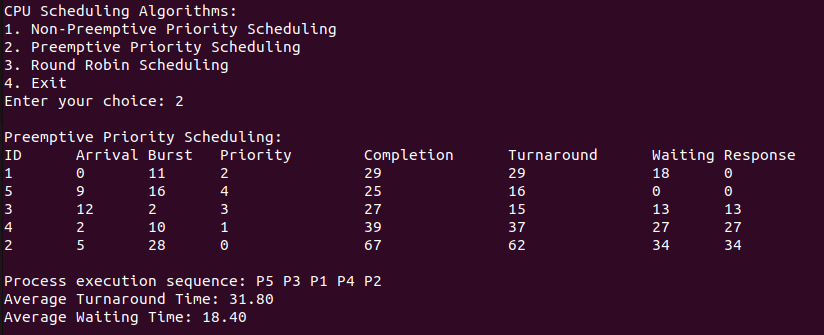

Overview
Preemptive Priority Scheduling is a CPU scheduling algorithm where each process is assigned a priority, and the CPU selects the process with the highest priority to run next. Unlike non-preemptive scheduling, preemptive priority scheduling allows for the interruption of the currently running process if a new process with a higher priority arrives. Here's how it works:
How It Works
- Order of Execution: Processes are scheduled based on their priority. The process with the highest priority (usually indicated by the smallest numerical value) is given access to the CPU. If two processes have the same priority, the tie can be resolved using their arrival times.
- Preemptive Nature: The currently executing process can be interrupted if a new process with a higher priority arrives. This ensures that the highest priority process is always given the CPU, even if it means stopping another process in the middle of its execution.
- Dynamic Adjustment: The scheduler continuously checks for new processes and compares their priorities with the currently running process to determine if a context switch is needed.
Advantages
- Improved Responsiveness: Critical or high-priority tasks get immediate attention, which is crucial in real-time systems where certain tasks need to be executed promptly.
- Flexible: It can handle varying priority levels dynamically and adjust the scheduling accordingly.
Disadvantages
- High Overhead: Frequent context switches can lead to significant overhead, reducing overall system efficiency.
- Starvation: Lower-priority processes might experience indefinite delays if high-priority processes keep arriving, leading to starvation.
Preemptive Priority Scheduling Code
#include <stdio.h>
#include <limits.h>
#define MAX_PROCESSES 10
typedef struct {
int id;
int arrival_time;
int burst_time;
int remaining_time;
int completion_time;
int waiting_time;
int turnaround_time;
int response_time;
int priority;
int started;
} Process;
void calculateTimes(Process processes[], int n) {
for (int i = 0; i < n; i++) {
processes[i].turnaround_time = processes[i].completion_time - processes[i].arrival_time;
processes[i].waiting_time = processes[i].turnaround_time - processes[i].burst_time;
}
float total_turnaround_time = 0, total_waiting_time = 0;
for (int i = 0; i < n; i++) {
total_turnaround_time += processes[i].turnaround_time;
total_waiting_time += processes[i].waiting_time;
}
printf("\nAverage Turnaround Time: %.2f\n", total_turnaround_time / n);
printf("Average Waiting Time: %.2f\n", total_waiting_time / n);
}
void print_processes(Process processes[], int n) {
printf("\nID\tArrival\tBurst\tPriority\tCompletion\tTurnaround\tWaiting\tResponse\n");
for (int i = 0; i < n; i++) {
printf("%d\t%d\t%d\t%d\t\t%d\t\t%d\t\t%d\t%d\n",
processes[i].id,
processes[i].arrival_time,
processes[i].burst_time,
processes[i].priority,
processes[i].completion_time,
processes[i].turnaround_time,
processes[i].waiting_time,
processes[i].response_time);
}
}
void preemptivePriority(Process processes[], int n) {
int currentTime = 0;
int completed = 0;
while (completed < n) {
int maxPriority = INT_MAX;
int index = -1;
for (int i = 0; i < n; i++) {
if (processes[i].arrival_time <= currentTime && processes[i].remaining_time > 0) {
if (processes[i].priority < maxPriority) {
maxPriority = processes[i].priority;
index = i;
}
}
}
if (index != -1) {
if (!processes[index].started) {
processes[index].response_time = currentTime - processes[index].arrival_time;
processes[index].started = 1;
}
currentTime++;
processes[index].remaining_time--;
if (processes[index].remaining_time == 0) {
processes[index].completion_time = currentTime;
completed++;
}
} else {
currentTime++;
}
}
calculateTimes(processes, n);
}
int main() {
Process processes[MAX_PROCESSES];
int n;
printf("Enter the number of processes: ");
scanf("%d", &n);
for (int i = 0; i < n; i++) {
processes[i].id = i + 1;
printf("Enter arrival time for Process %d: ", processes[i].id);
scanf("%d", &processes[i].arrival_time);
printf("Enter burst time for Process %d: ", processes[i].id);
scanf("%d", &processes[i].burst_time);
printf("Enter priority for Process %d: ", processes[i].id);
scanf("%d", &processes[i].priority);
processes[i].remaining_time = processes[i].burst_time;
processes[i].completion_time = 0;
processes[i].started = 0;
}
preemptivePriority(processes, n);
print_processes(processes, n);
return 0;
}
Sample Input
Processes: 1, 2, 3, 4, 5
Arrivat Times: 0, 5, 12, 2, 9
Burst Times: 11, 28, 2, 10, 16
Priority (0-LOWEST AND 4-HIGHEST): 2, 0, 3, 1, 4
Sample Output
